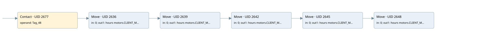

time work motor
time work motor · 검색 색인 순서 45 · 원본 내부 NID 추정 48
백업 PLF 원본의 2899094 바이트 위치에서 복원한 XML. 검색 문서 1046의 객체 키 161022005412000000000000와 연결했다. 이름 해석 11/11개. 남은 RefId는 상수 또는 미해석 참조다.
연결 구조 다시 그리기
원본 Part/PCon/Wire를 이용한 연결도다. TIA 화면의 래더 배치 또는 실행 결과를 재현한 그림은 아니다. 핀 연결은 아래 표와 원본 XML을 기준으로 읽는다. 노드 위에 마우스를 두면 피연산자 이름을 볼 수 있다.

접점·코일·블록과 피연산자
| Part UID | Gate | Negated 핀 | 연결 피연산자 |
|---|---|---|---|
| 2677 | Contact | operand = Tag_48 | |
| 2636 | Move | in = 0; out1 = hours motors.CLIENT_MOTOR_6_HOUR | |
| 2639 | Move | in = 0; out1 = hours motors.CLIENT_MOTOR_7_HOUR | |
| 2642 | Move | in = 0; out1 = hours motors.CLIENT_MOTOR_8_HOUR | |
| 2645 | Move | in = 0; out1 = hours motors.CLIENT_MOTOR_9_HOUR | |
| 2648 | Move | in = 0; out1 = hours motors.CLIENT_MOTOR_10_HOUR |
접점 경로를 펼친 조건식
Contact·O/A·비교기의 원본 연결을 읽기 쉽게 펼친 보조 해석이다. POWER는 전원 레일 시작을 뜻한다. 호출 블록·에지·타이머의 내부 동작과 다중 쓰기 순서는 이 표로 실행 검증하지 않았다. 미해석 핀과 RefId는 원문 연결표에서 확인한다.
| UID | 동작 | 대상 | 원본 접점 경로 | 내용 |
|---|---|---|---|---|
| 2636 | Move | hours motors.CLIENT_MOTOR_6_HOUR | Tag_48 | Move 입력 0 |
| 2639 | Move | hours motors.CLIENT_MOTOR_7_HOUR | Move UID 2636.eno (블록 동작 확인) | Move 입력 0 |
| 2642 | Move | hours motors.CLIENT_MOTOR_8_HOUR | Move UID 2639.eno (블록 동작 확인) | Move 입력 0 |
| 2645 | Move | hours motors.CLIENT_MOTOR_9_HOUR | Move UID 2642.eno (블록 동작 확인) | Move 입력 0 |
| 2648 | Move | hours motors.CLIENT_MOTOR_10_HOUR | Move UID 2645.eno (블록 동작 확인) | Move 입력 0 |
원본 배선 연결
| Wire UID | 동일 Wire 연결 끝점 |
|---|---|
| 2679 | Powerrail {} ↔ Part 2677.in |
| 2662 | ORef 2651 (Tag_48) ↔ Part 2677.operand |
| 2678 | Part 2677.out ↔ Part 2636.en |
| 2663 | ORef 2652 (0) ↔ Part 2636.in |
| 2665 | Part 2636.eno ↔ Part 2639.en |
| 2664 | Part 2636.out1 ↔ ORef 2653 (hours motors.CLIENT_MOTOR_6_HOUR) |
| 2666 | ORef 2654 (0) ↔ Part 2639.in |
| 2668 | Part 2639.eno ↔ Part 2642.en |
| 2667 | Part 2639.out1 ↔ ORef 2655 (hours motors.CLIENT_MOTOR_7_HOUR) |
| 2669 | ORef 2656 (0) ↔ Part 2642.in |
| 2671 | Part 2642.eno ↔ Part 2645.en |
| 2670 | Part 2642.out1 ↔ ORef 2657 (hours motors.CLIENT_MOTOR_8_HOUR) |
| 2672 | ORef 2658 (0) ↔ Part 2645.in |
| 2674 | Part 2645.eno ↔ Part 2648.en |
| 2673 | Part 2645.out1 ↔ ORef 2659 (hours motors.CLIENT_MOTOR_9_HOUR) |
| 2675 | ORef 2660 (0) ↔ Part 2648.in |
| 2676 | Part 2648.out1 ↔ ORef 2661 (hours motors.CLIENT_MOTOR_10_HOUR) |
식별자 해석 근거 11개
| ORef UID | RefId | 이름 | IdentXmlPart 파일 | 해석 방법 |
|---|---|---|---|---|
| 2651 | 284 | Tag_48 | 0613-IdentXmlPart.xml | UID/RID + search-text + NID agreement |
| 2652 | 12 | 0 | 0616-IdentXmlPart.xml | literal candidate: UID/RID/NID + nearby named declarations + search-text agreement |
| 2653 | 42 | hours motors.CLIENT_MOTOR_6_HOUR | 0615-IdentXmlPart.xml | UID/RID + search-text + NID agreement |
| 2654 | 12 | 0 | 0616-IdentXmlPart.xml | literal candidate: UID/RID/NID + nearby named declarations + search-text agreement |
| 2655 | 48 | hours motors.CLIENT_MOTOR_7_HOUR | 0615-IdentXmlPart.xml | UID/RID + search-text + NID agreement |
| 2656 | 12 | 0 | 0616-IdentXmlPart.xml | literal candidate: UID/RID/NID + nearby named declarations + search-text agreement |
| 2657 | 54 | hours motors.CLIENT_MOTOR_8_HOUR | 0615-IdentXmlPart.xml | UID/RID + search-text + NID agreement |
| 2658 | 12 | 0 | 0616-IdentXmlPart.xml | literal candidate: UID/RID/NID + nearby named declarations + search-text agreement |
| 2659 | 60 | hours motors.CLIENT_MOTOR_9_HOUR | 0615-IdentXmlPart.xml | UID/RID + search-text + NID agreement |
| 2660 | 12 | 0 | 0616-IdentXmlPart.xml | literal candidate: UID/RID/NID + nearby named declarations + search-text agreement |
| 2661 | 66 | hours motors.CLIENT_MOTOR_10_HOUR | 0615-IdentXmlPart.xml | UID/RID + search-text + NID agreement |
검색 코드 보조 자료
참조 명칭을 찾기 위한 자료이며 실행 순서나 AND/OR 관계는 위 연결표로 확인한다.
"tag_48" move 0 move 0 move 0 move 0 move 0 "hours motors".client_motor_6_hour "hours motors".client_motor_7_hour "hours motors".client_motor_8_hour "hours motors".client_motor_9_hour "hours motors".client_motor_10_hour